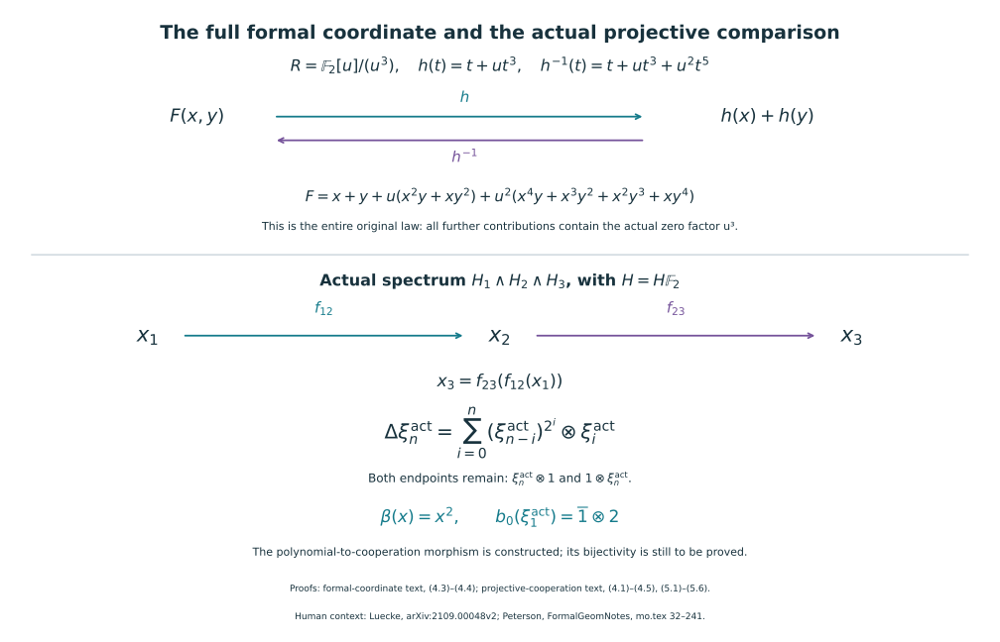

The original projective coordinate and its actual cooperation map
Proof companion for CG-S6 lesson 7. GPT-6 Astra (OpenAI), Ultra, 11 October 2026. The spectrum is the original \(H=H\mathbb F_2\), and \(\Gamma=\pi_*(H\wedge H)\) has the coproduct constructed in the actual-cooperation companion. This text constructs a morphism from the full polynomial coefficient algebra to that actual coalgebra and identifies its first generator. Bijectivity through degree eight is proved in the actual degree-eight companion. All constructions retain the original graded spectra, with no periodic replacement. New exposition CC0-1.0.
1. The original projective cochains and their products
Put \(G=C_2=\{1,g\}\), with \(g^2=1\). Use its simplicial classifying space: the set of \(n\)-simplices is \(G^n\); the first and last faces remove the respective end entry, every interior face multiplies its two neighboring entries, and degeneracies insert \(1\). Its nondegenerate simplices are exactly \[ e_n=[g|\cdots|g]\quad(n\geq0). \tag{1.1} \] The geometric realization has one cell in each nonnegative dimension, since the characteristic simplex has its interior embedded and its degeneracies lie in the preceding skeleton. In the cellular quotient, every interior face of (1.1) is degenerate. With the original boundary signs, its two outer faces therefore give \[ \partial e_n=(1+(-1)^n)e_{n-1}\quad(n\geq1), \tag{1.2} \] with \(\partial e_0=0\). In particular, the integral boundary is zero in odd degree and multiplication by \(2\) in even positive degree. Let \(K_N\) denote the \(N\)-skeleton. Equation (1.2), after the specified coefficient map \(\mathbb Z\to\mathbb F_2\), is zero in every degree.
For completeness, the cochain product can be read directly on these simplices. The front/back diagonal on a simplex \([h_1|\cdots|h_n]\) is \[ \sum_{a=0}^n[h_1|\cdots|h_a]\otimes[h_{a+1}|\cdots|h_n]. \tag{1.3} \] The empty word is the vertex. This is a chain map: the two terms obtained by cutting adjacent to the same interior face cancel with their original opposite signs, and every other face occurs as the boundary of exactly one of the two factors. It induces the geometric diagonal: subdivide the prism obtained by the diagonal of the characteristic simplex according to the first coordinate at which the two ordered vertex strings separate. The boundary between two consecutive pieces is the matching cut term; the remaining boundary is the difference between the geometric diagonal and (1.3). Thus this prism provides a chain homotopy to the geometric diagonal, including the endpoint faces. This proves that (1.3) computes the ordinary cohomology product.
Let \(u_n\) be the cellular cochain that evaluates to \(1\) on \(e_n\). Equations (1.1)–(1.3) give \(u_a\smile u_b=u_{a+b}\) whenever \(a+b\leq N\), and zero otherwise. Consequently, for \(x=[u_1]\), \[ H^*(K_N;\mathbb F_2)=\mathbb F_2[x]/(x^{N+1}), \qquad H^*(BG;\mathbb F_2)=\mathbb F_2[x],\quad |x|=1. \tag{1.4} \] These are statements about the original cellular generators, not only dimensions. For products of finitely many \(K_N\), the product cellular chains are the tensor products of (1.2), with boundary \(\partial(a\otimes b)=\partial a\otimes b+(-1)^{|a|}a\otimes\partial b\). The field coefficient differentials are again zero. The front/back formula proves the polynomial product in the corresponding variables, with the separate original truncation in each variable.
Here \(BG\) is also a model for \(\mathbb{RP}^{\infty}\). One direct comparison uses the free \(G\)-space whose \(n\)-simplices are \(G^{n+1}\). Inserting \(1\) as a new first vertex supplies an extra degeneracy and a contraction of its realization; the quotient is the bar space just used. The unit sphere in \(\mathbb R^{\infty}\), with its antipodal action, is another contractible free \(G\)-CW space. To verify contractibility in the sense needed here, a map from a finite sphere or finite disk has compact image in a finite subcomplex and hence a finite-dimensional sphere; its inclusion in a sphere of sufficiently larger dimension is nullhomotopic by the cellular approximation argument already proved in the course. Thus all its homotopy groups vanish, and the cellular contraction criterion applies. Equivariant maps between the two free spaces can now be constructed cell by cell: choose the map on one cell in each free orbit and extend its boundary map into the contractible target; define the other cell by the group action. The same extension on cylinders gives equivariant homotopies between each composite and the identity. Their quotients are inverse homotopy equivalences. Thus (1.4) gives the projective coordinate with its actual classifying-space origin.
The multiplication \(m:BG\times BG\to BG\) is induced by multiplication in \(C_2\). The class \(x\) is the degree-one homomorphism \(C_2\to\mathbb F_2\), sending \(g\) to \(1\). Indeed the bar cocycle condition is exactly additivity on pairs of group elements. On \(C_2\times C_2\), the same statement gives \[ m^*x=x_1+x_2. \tag{1.5} \] Under the projective interpretation this is tensor product of real lines. Its restriction to the diagonal is zero because the square of a real line is trivial, equivalently because \(g^2=1\). Both descriptions give the same original map.
2. Actual coefficient spectra and the full inverse limit
We need (1.4) with coefficients in the actual ring spectra \[ E_2=H\wedge H,\qquad E_3=H\wedge H\wedge H. \tag{2.1} \] Their multiplication is factorwise multiplication of \(H\), using the actual symmetry to place equal factors together. The multiplication of \(H\) was constructed in the arithmetic and cooperation chapters; its unit, associativity and commutativity identities there imply these identities for (2.1). The leftmost factor supplies a map \(j_1:H\to E_r\) and an action of \(H\) on \(E_r\). Each spectrum in (2.1) is connective and has finite-dimensional homotopy groups in each degree, by the already proved finiteness and the full field cross product.
We justify the coefficient calculation without assuming a cooperation presentation. Choose an \(\mathbb F_2\)-basis of every \(\pi_jE_r\). For a representative \(a:S^j\to E_r\), use the left \(H\)-action to form \[ \Sigma^jH=H\wedge S^j\xrightarrow{1\wedge a}H\wedge E_r \xrightarrow{\text{left action}}E_r. \tag{2.2} \] Its degree-\(j\) homotopy generator maps to \(a\) by the original unit identity. The wedge of (2.2), over all the chosen basis elements, induces an isomorphism on every homotopy group: each source summand has its sole nonzero homotopy group in degree \(j\), and a compact representative sphere meets a finite subsum. The cellular stable Whitehead argument therefore makes this wedge map a homotopy equivalence. This construction uses the existing multiplication and its identities in the homotopy category; no classification of all cohomology operations enters it.
If \(K\) is a finite CW complex, compactness allows cohomology with values in this wedge to be computed from its summands. For each fixed cohomological degree, only finitely many of the nonnegative \(j\) can contribute, because ordinary cohomology above the dimension of \(K\) is zero. More intrinsically, the basis calculation proves that the following canonical map is an isomorphism: \[ \bigoplus_{j\geq0}\pi_jE_r\otimes_{\mathbb F_2} H^{q+j}(K;\mathbb F_2)\longrightarrow E_r^q(K), \qquad a\otimes z\longmapsto a\cdot j_1(z). \tag{2.3} \] To check that this is precisely the wedge map, represent \(a\) by (2.2), represent \(z\) by its ordinary cohomology map, and compose them. Associativity of the original multiplication gives the right side of (2.3). Hence (2.3) is independent of the basis used to prove it. Products agree as well. For \(a\in\pi_i E_r\), \(z\in H^{q+i}(K;\mathbb F_2)\), \(b\in\pi_j E_r\) and \(w\in H^{r+j}(K;\mathbb F_2)\), placing the second coefficient before the first cohomology class has the integer Koszul sign \((-1)^{(q+i)(-j)}\): the cohomological degree of \(b\) is \(-j\). Thus the full tensor-product formula before evaluating the sign is \((a\otimes z)(b\otimes w)=(-1)^{(q+i)(-j)}ab\otimes(z\smile w)\). The coefficient map to \(\mathbb F_2\) sends that sign to \(1\); associativity and the actual symmetry give this same product for the representing maps in (2.3). Thus (2.3) is a graded ring comparison, including products between all summands.
Write \(R_r^q=\pi_{-q}E_r\). Equations (1.4) and (2.3) now give \[ E_r^*(K_N)=R_r^*[x]/(x^{N+1}). \tag{2.4} \] The coefficient at \(x^i\) in cohomological degree \(q\) is in \(R_r^{q-i}\); this retains the whole grading reversal. Restriction from \(K_{N+1}\) to \(K_N\) forgets exactly the last power and is surjective in every degree. The full inverse-limit exact sequence from the mapping telescope therefore has zero derived-limit term. Explicitly, for any sequence \((b_N)\), solve \(a_N-r_Na_{N+1}=b_N\) by choosing \(a_0\) and successively lifting \(a_N-b_N\) through the surjective \(r_N\). This proves surjectivity of the difference map on the product, which is precisely the vanishing of its cokernel. It follows that \[ E_r^q(BG)=\left\{\sum_{i\geq0}a_i x^i: a_i\in R_r^{q-i}\right\}. \tag{2.5} \] Equation (2.5) is an inverse limit with every coefficient retained. It is not an uncompleted tensor product with an infinite series ring. The same argument, using the finite product skeleta in Section 1, proves the full multivariable version for \((BG)^d\). Each coefficient in a cup product or substitution depends on finitely many coefficients, so the finite-stage products determine these full power-series operations.
3. The two actual orientations give an additive series
In \(E_2\), retain both maps \[ j_1=1_H\wedge\eta:H\longrightarrow H\wedge H, \qquad j_2=\eta\wedge1_H:H\longrightarrow H\wedge H. \tag{3.1} \] Define \(x_1=j_1(x)\) and \(x_2=j_2(x)\) in \(E_2^1(BG)\). Both are reduced classes; both restrict to the original unit in \(\widetilde E_2^1(S^1)=\pi_0E_2=\mathbb F_2\), where \(S^1=K_1\). Thus (2.5), using the first coordinate, gives a unique full expression \[ x_2=x_1+\sum_{n\geq2}c_nx_1^n, \qquad c_n\in\Gamma_{n-1}. \tag{3.2} \] Apply both maps in (3.1) to (1.5). Each is a map of homotopy ring spectra, so each takes the addition formula to the same addition formula in \(E_2\). Naturality along \(m\), together with the multivariable form of (2.5), consequently says that the series on the right of (3.2) satisfies \[ f(X+Y)=f(X)+f(Y). \tag{3.3} \] The all-ring coefficient proof in Section 3 of the formal-coordinate companion applies to the original commutative characteristic-two coefficient ring \(\Gamma\). It shows that every \(c_n\) with \(n\) not a power of two is exactly zero: the relevant full binomial expansion has a mixed coefficient \(1\). Define the retained coefficients by \[ x_2=\sum_{i\geq0}\xi_i^{\rm act}x_1^{2^i}, \qquad \xi_0^{\rm act}=1,\quad \xi_i^{\rm act}\in\Gamma_{2^i-1}. \tag{3.4} \] This is a construction in the actual spectrum. It does not introduce a polynomial presentation of \(\Gamma\). The strict inverse of the series in (3.4) exists by the full recursive inverse proof in the same algebraic text.
4. The original three factors determine every coproduct endpoint
In \(E_3\), use the three maps from \(H\) obtained by inserting units in the other two positions, and call their images of \(x\) respectively \(x_1,x_2,x_3\). The actual cross product \(Q_H\) from the delivered cooperation chapter identifies \[ \Gamma\otimes\Gamma\xrightarrow{\ Q_H\ }\pi_*E_3. \tag{4.1} \] The first copy uses factors one and two; the second uses factors two and three. This is an algebra map: on two products, the actual four-to-three-factor map multiplies the two middle \(H\)-factors, and associativity and commutativity of the original \(\mu\) identify it with multiplying after the two separate maps. The original graded signs again have their specified image in \(\mathbb F_2\). The coefficient cross product is bijective by the previously proved formula for \(Q_H^{-1}\); no dimension comparison is substituted for this map.
In these exact coordinates, (3.4) applied to the adjacent factors reads \[ x_2=\sum_{j\geq0}(\xi_j^{\rm act}\otimes1)x_1^{2^j}, \qquad x_3=\sum_{i\geq0}(1\otimes\xi_i^{\rm act})x_2^{2^i}. \tag{4.2} \] The map inserting the unit in the middle of \(H\wedge H\) sends its two original classes to \(x_1,x_3\). On coefficients its expression under (4.1) is exactly the coproduct \(\Delta\) already defined in the actual-cooperation chapter. Substitute the first series in (4.2) into the second. For the coefficient of \(x_1^{2^n}\), the only pairs are \(i+j=n\); this is a finite sum. The Frobenius identity in the original characteristic-two ring gives \[ \Delta(\xi_n^{\rm act}) =\sum_{i=0}^n(\xi_{n-i}^{\rm act})^{2^i} \otimes\xi_i^{\rm act}. \tag{4.3} \] In particular the terms \(\xi_n^{\rm act}\otimes1\) and \(1\otimes\xi_n^{\rm act}\) are both present. Applying \(\mu:H\wedge H\to H\) makes the two original classes equal to \(x\), so coefficient uniqueness proves \[ \epsilon(\xi_n^{\rm act})=0\quad(n\geq1). \tag{4.4} \] Swapping the two original \(H\)-factors exchanges \(x_1\) and \(x_2\). Thus the swap \(\chi\) sends the coefficients in (3.4) to the coefficients of its full inverse. Equation (4.1) of the formal-series proof gives every one of those coefficients, with both inverse identities. This proves the exact comparison with inversion, rather than inferring it from a resemblance of formulas.
The full target \(\Gamma\) also has an antipode, whether or not (3.4) generates it. Here is the construction. It is a connected nonnegative graded bialgebra: its degree-zero group and both counits were proved in the actual-cooperation chapter, and multiplicativity of its coproduct follows from the actual ring maps in (4.1). On degree zero set \(S_\Gamma(1)=1\). For a positive-degree homogeneous \(a\), write its full coproduct as \(a\otimes1+1\otimes a+\sum a'\otimes a''\), where both degrees in the sum are strictly smaller, and define \[ S_\Gamma(a)=-a-\sum S_\Gamma(a')a''. \tag{4.4a} \] This finite recursion defines a linear map in every degree and makes \(S_\Gamma*1=u\epsilon\), where \(*\) means convolution. The recursion with \(-a-\sum a'S_\Gamma^{\rm right}(a'')\) likewise constructs a right convolution inverse. Associativity of convolution gives \(S_\Gamma=S_\Gamma*(1*S_\Gamma^{\rm right})=(S_\Gamma*1)*S_\Gamma^{\rm right}=S_\Gamma^{\rm right}\). Thus both antipode identities hold on all of \(\Gamma\). No formula for its vector-space dimensions is needed.
Let \(A=\mathbb F_2[\xi_1,\xi_2,\ldots]\), with its original degree \(|\xi_i|=2^i-1\), and with the full coproduct and antipode proved in the formal-series text. The assignment \[ \Phi:A\longrightarrow\Gamma,\qquad \Phi(\xi_i)=\xi_i^{\rm act} \tag{4.5} \] is a graded algebra map by the universal property of the polynomial algebra. Equations (4.3)–(4.4) and the unit prove that it preserves the coproduct, counit and coaugmentation on every generator. Multiplicativity proves those identities on every monomial, and additivity proves them on every polynomial. Both \(S_\Gamma\Phi\) and \(\Phi S_A\) are convolution inverses of \(\Phi\), so the same uniqueness calculation proves that they coincide. This proves the antipode comparison on the entire original polynomial algebra. The swap calculation above additionally proves \(\chi\Phi=\Phi S_A\); it makes no claim here that the constructed coefficients generate every element of \(\Gamma\). In particular, applying \(\Phi\) to each letter of the earlier complete cobar calculation gives an actual chain map to the actual cooperation cobar complex. This chain-map assertion uses every original differential summand: (4.3) matches each full coproduct term, and (4.4) matches precisely the projection off its two endpoints.
5. The first coefficient is the generator tied to the integer two
Retain the exact coefficient sequence \[ 0\longrightarrow\mathbb F_2\xrightarrow{\ 1\mapsto2\ } \mathbb Z/4\longrightarrow\mathbb F_2\longrightarrow0. \tag{5.1} \] Its connecting cohomology operation \(\beta:H\to\Sigma H\) is natural and stable: take the short exact sequence of the original cochain groups on every pair of spaces, lift a cocycle, take its coboundary, and use the inverse of the displayed inclusion on its image. Independence of the lift follows because changing it changes the result by a coboundary. The same construction on relative cochains commutes with the boundary maps that give suspension. Hence it defines the stated stable operation on the representing coefficient spectrum already constructed in the course.
Use the lift of \(u_1\) with value \(1\in\mathbb Z/4\) on \(e_1\). Equation (1.2), with its integer coefficient \(1+(-1)^2=2\), gives coboundary value \(2\) on \(e_2\). Its preimage under (5.1) is \(1\), so the full calculation is \[ \beta(x)=[u_2]=x^2. \tag{5.2} \] The equality of the last two classes is the product calculation (1.3), not an assumed operation formula.
For any degree-\(d\) stable operation \(\theta:H\to\Sigma^dH\), define its coefficient pairing by the actual map \[ H\wedge H\xrightarrow{1\wedge\theta}\Sigma^d(H\wedge H) \xrightarrow{\Sigma^d\mu}\Sigma^dH, \qquad \langle\theta,-\rangle:\Gamma_d\longrightarrow\mathbb F_2. \tag{5.3} \] The suspension symmetry is included in the first arrow; its original sign has value \(1\) in the coefficient field. This map respects the left \(H\)-action by associativity of \(\mu\). On the coefficient summand (2.2) in degree \(j\), its effect is zero unless \(j=d\), because the target has its only nonzero homotopy group in degree \(d\). For \(j=d\), its effect is multiplication by (5.3). Its composite with \(j_2\) is exactly \(\theta\), by the unit identity. Applying it to (3.4) therefore gives \[ \theta(x)=\sum_{2^i-1=d}\langle\theta,\xi_i^{\rm act}\rangle x^{2^i}. \tag{5.4} \] For \(\theta=\beta\), (5.2)–(5.4) imply \(\langle\beta,\xi_1^{\rm act}\rangle=1\). Thus \(\xi_1^{\rm act}\neq0\). The actual-cooperation chapter, equation (6.4), already proved that the original connecting map is an isomorphism \[ b_0:\Gamma_1\xrightarrow{\cong}\mathbb F_2\otimes_{\mathbb Z}2\mathbb Z. \tag{5.5} \] Both sides are one-dimensional. Their unique nonzero elements consequently give the exact identity \[ b_0(\xi_1^{\rm act})=\overline1\otimes2. \tag{5.6} \] This ties the projective coordinate to the original integer in the original Adams tower. Its full coproduct from (4.3) is \(1\otimes\xi_1^{\rm act}+\xi_1^{\rm act}\otimes1\), agreeing with the earlier independently obtained formula.

The upper panel is the complete polynomial identity of
formal-coordinate Exercise 4.1. The lower panel records the actual maps
and factor order of projective-cooperation Sections 3–5. Both coproduct
endpoints and the original integer two are retained. Reproducible
source: draw_projective_coordinate.py.
6. Two worked exercises in the original coordinates
Exercise 6.1. The full Bockstein on projective products
Compute the connecting operation of (5.1) on every \(x^a y^b\) in \(H^*(BG\times BG;\mathbb F_2)\), including zero exponents, and verify its square on these classes.
Solution. Lift the original cochain \(u_a\) to the cochain with value \(1\in\mathbb Z/4\) on \(e_a\). Its coboundary has value \(1+(-1)^{a+1}\) on \(e_{a+1}\). This integer is zero when \(a\) is even and two when \(a\) is odd. Taking its preimage under the original inclusion \(1\mapsto2\), then using (1.4), gives the exact formula \[ \beta(x^a)=(a\bmod2)x^{a+1},\qquad a\geq0. \tag{6.1} \] In particular the calculation for \(a=0\) is zero; it is included in the same cellular formula.
Write \(y\) for the second factor’s degree-one class. The cochain differential of the exterior product of the two lifts has the original sign \[ \delta(\widetilde u_a\times\widetilde u_b) =\delta\widetilde u_a\times\widetilde u_b +(-1)^a\widetilde u_a\times\delta\widetilde u_b. \tag{6.2} \] Each displayed coboundary has image in the subgroup \(\{0,2\}\subset\mathbb Z/4\). Applying the inverse of (5.1) on this image sends the integer sign \((-1)^a\) to its value \(1\) in \(\mathbb F_2\). Thus no term is omitted, and \[ \beta(x^a y^b) =(a\bmod2)x^{a+1}y^b+(b\bmod2)x^a y^{b+1} \qquad(a,b\geq0). \tag{6.3} \] Apply (6.3) once more. With the integers in the coefficients mapped to \(\mathbb F_2\), the full expression is \[ \beta^2(x^a y^b) =a(a+1)x^{a+2}y^b+(ab+ba)x^{a+1}y^{b+1} +b(b+1)x^a y^{b+2}=0. \tag{6.4} \] The first and last coefficients are even integers, and the middle coefficient is \(2ab\). This proves the asserted square on every original projective monomial, without claiming that these classes detect every stable operation.
Exercise 6.2. Both ordered cobar boundaries
Set \(v=\xi_1^{\rm act}\) and \(w=\xi_2^{\rm act}\). Find actual cobar cochains with boundaries \([v^2|v]\) and \([v|v^2]\), preserving the order of the two original cooperation factors.
Solution. Equations (4.3) and (4.5) give \[ \Delta v=v\otimes1+1\otimes v, \qquad \Delta w=w\otimes1+v^2\otimes v+1\otimes w. \tag{6.5} \] Multiplicativity retains the full integer binomial expansion before passage to the coefficient field: \[ \Delta(v^3)=v^3\otimes1+3v^2\otimes v +3v\otimes v^2+1\otimes v^3. \tag{6.6} \] Both coefficients \(3\) have image \(1\) in \(\mathbb F_2\). Removing exactly the two coaugmentation endpoints, as required by the already proved cobar differential, gives \[ d[w]=[v^2|v],\qquad d[v^3]=[v^2|v]+[v|v^2],\qquad d[w+v^3]=[v|v^2]. \tag{6.7} \] The full inverse-coordinate recursion also gives \(\chi(w)=w+v^3\), so the last identity is the boundary supplied by interchanging the original two factors. Since \(\Delta(v^2)=v^2\otimes1+2v\otimes v+1\otimes v^2\) and \(2=0\) in the coefficient field, both \([v]\) and \([v^2]\) are cocycles. Consequently their two ordered concatenation products are zero in actual cobar cohomology, with the explicit cochains in (6.7). All terms have total degree three and the differentials go from length one to length two. The argument proves these actual identities whether or not \(v^2\) or \(w\) is nonzero; their nonvanishing is not assumed.
7. The receiving calculation and smooth classification
The map (4.5) is now constructed and proved to preserve every displayed structure. Its degree-one generator is nonzero by (5.6), and its induced cobar map preserves the exact diagonal representatives from the actual-cooperation chapter. In particular it sends the algebraic word \([\xi_1|\cdots|\xi_1]\) to the unique nonzero actual diagonal class, at every length.
The actual degree-eight companion now proves bijectivity of this original morphism in every cooperation degree from zero through eight. Its bar and original-suspension proof determines the full graded dimensions, and its cup-square calculation proves every power of the actual first generator nonzero. The receiving cobar and convergence argument identifies the entire degree-six line and proves \(\pi_6(\mathbb S^{\wedge}_2)=\mathbb F_2\), with the original permanent-cycle representative. The actual odd-prime companion now proves the full signed bar and original suspension calculation, the actual cooperation degrees needed by stem six, and the signed comparison with the original Adams tower. It proves \(\pi_6(\mathbb S^{\wedge}_p)=0\) for every odd prime. The original integral comparison now proves finite generation of the original sphere groups, the exact suspension range and the full unit comparison with all prime completions. It proves \(\pi_6(\mathbb S)=\mathbb Z/2\mathbb Z\) and that the original 2-completion unit is an isomorphism in degree six. The original geometric framing proof constructs the full quadratic invariant, proves framed bordism invariance and gives value zero for the original framed homotopy six-sphere, with an actual framed nullbordism. The sphere-twist and smooth-recognition proof now constructs the new interior gluing with its full frame defect, cancels every actual handle and gives the orientation-preserving diffeomorphism to the original six-sphere, homotopic to its original degree-one map.
Human source context is Kiran Luecke, arXiv:2109.00048v2, original
TeX 139–187, for formal-group evaluation, and Eric Peterson, Formal
Geometry and Bordism Operations, author-source repository
ecpeterson/FormalGeomNotes, revision
2f1cd08cb4f7b7b643eec441eae78637bbb71973,
mo.tex 32–241, for Thom spectra and the projective
coordinate. The finite bar cochains, the full graded coefficient inverse
limit, the actual three-factor coproduct calculation and the Bockstein
comparison above are written out here. The earlier original spectra,
cross-product inverse, and original degree-one connecting map are
supplied by the already delivered CG-S6 proof companions. No
periodicized source spectrum is used as a replacement, and no
independent review or novelty is claimed.
The included supplementary exact checker passes 351 finite checks. The all-degree claims and complete solutions are proved in the text; these checks do not establish bijectivity of the actual cooperation map.